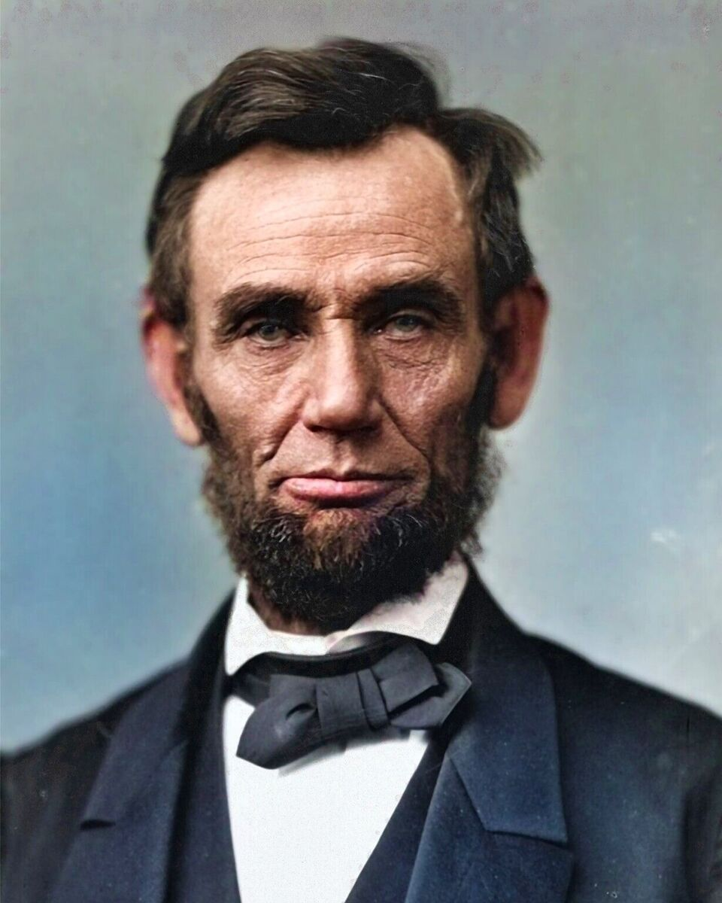

Are you someone with roots in the United States, a student researching for a project, or just a
curious mind eager to learn? No matter who you are, you've come to the right place! This website
is your gateway to exploring America — a land of opportunity, diversity, breathtaking landscapes,
and rich history. From the towering skylines of New York to the vast Grand Canyon, from revolutionary
landmarks to cutting-edge innovations, the U.S. is a country of contrasts and stories waiting to be told.
Dive in and uncover everything from its deep historical roots to its dynamic present. Let’s embark on this
journey together and discover the heart of America!
History of the U.S
The United States traces its origins to the 13 British colonies established along the East Coast in the 17th
and 18th centuries. Tensions between the colonies and Britain grew over taxation and governance, leading to the
American Revolution (1775–1783). On July 4, 1776, the Declaration of Independence, primarily authored by Thomas
Jefferson, was adopted, proclaiming the colonies' separation from Britain and asserting the principles of liberty
and self-governance. After winning independence in 1783, the U.S. adopted the Constitution in 1787, creating a
federal government with a system of checks and balances. The country expanded westward, survived a civil war (1861
–1865) over slavery, and emerged as a major industrial power in the late 19th century. The 20th century saw the U.S.
playing a decisive role in both World Wars, enduring the Great Depression, and leading the Cold War against the Soviet
Union. Landmark movements like the Civil Rights Movement (1950s–1960s) advanced equality. Today, the U.S. stands as a
global leader in economy, science, and culture. Its history is a story of resilience, innovation, and the ongoing pursuit
of the ideals set forth in 1776.
Breif Description and Geography
The United States of America (U.S.) is a federal republic consisting of 50 states, a federal district
(Washington, D.C.), and several territories. It is one of the world's largest and most influential
countries, known for its economic power, technological advancements, and cultural diversity, with a
population of over 330 million. Covering approximately 9.8 million square kilometers (3.8 million
square miles), it is the third-largest country by land area after Russia and Canada. The U.S. is
bordered by Canada to the north, Mexico to the south, the Atlantic Ocean to the east, and the Pacific
Ocean to the west. Its geography is diverse, featuring major mountain ranges such as the Rockies, Appalachians,
and Sierra Nevada, as well as vast plains, plateaus, and deserts like the Great Plains, Colorado
Plateau, Mojave Desert, and Great Basin. The country is home to significant bodies of water, including
the Great Lakes and major rivers such as the Mississippi, Missouri, and Colorado. The U.S. experiences a
wide range of climate zones, from the tropical conditions of Hawaii and Florida to the arid landscapes of the
Southwest, the temperate regions of the East Coast and Midwest, the continental climate of the northern states,
and the arctic conditions of Alaska. The country also includes the geographically distinct states of Alaska, located
northwest of Canada, and Hawaii, an island chain in the Pacific. This vast and varied geography contributes to its
rich natural resources and diverse ecosystems.
States of America
1. Alabama
Capital:
Montgomery
Nickname:
The Yellowhammer State
Background:
Played a crucial role in the Civil Rights Movement. The state has a strong agricultural
and industrial economy, particularly in aerospace and automotive manufacturing.
Famous for:
Civil Rights Movement, NASA’s Marshall Space Flight Center, college football (University
of Alabama, Auburn University).
2. Alaska
Capital:
Juneau
Nickname:
The Last Frontier
Background:
Purchased from Russia in 1867, Alaska is the largest U.S. state by land area. The economy
relies on oil, fishing, and tourism.
Famous for:
Northern Lights, Denali (North America’s highest peak), vast wilderness, glaciers.
3. Arizona
Capital:
Phoenix
Nickname:
The Grand Canyon State
Background:
Known for its desert climate and stunning landscapes, Arizona is a hub for tourism and has a
growing tech industry.
Famous for:
Grand Canyon, Sedona’s red rocks, saguaro cacti, hot climate.
4. Arkansas
Capital:
Little Rock
Nickname: The Natural State
Background: Arkansas is rich in natural resources, including forests and rivers. It is the home state of Walmart, the world's largest retailer.
Famous for: Walmart headquarters, Hot Springs National Park, Ozark Mountains.
5. California
Capital:
Sacramento
Nickname: The Golden State
Background: The most populous U.S. state with a diverse economy, including Hollywood, Silicon Valley, and agriculture in the Central Valley.
Famous for: Hollywood, Silicon Valley, Golden Gate Bridge, Disneyland, beaches.
6. Colorado
Capital:
Denver
Nickname: The Centennial State
Background: Known for the Rocky Mountains, Colorado has a strong outdoor tourism industry and is a leader in aerospace and renewable energy.
Famous for: Rocky Mountains, skiing, Red Rocks Amphitheatre.
7. Connecticut
Capital:
Hartford
Nickname: The Constitution State
Background: One of the original 13 colonies, Connecticut has a strong financial sector, including insurance companies.
Famous for: Yale University, historic colonial towns, submarines.
8. Delaware
Capital:
Dover
Nickname:
The First State
Background:
The first state to ratify the U.S. Constitution, Delaware has a business-friendly climate with many corporations incorporated there.
Famous for:
No sales tax, corporations, beaches.
9. Florida
Capital:
Tallahassee
Nickname:
The Sunshine State
Background:
Florida has a tourism-driven economy and is a popular retirement destination.
Famous for:
Disney World, Miami, Everglades, space launches from Kennedy Space Center.
10. Georgia
Capital:
Atlanta
Nickname:
The Peach State
Background:
Atlanta is a major business hub and played a significant role in the Civil Rights Movement.
Famous for:
Coca-Cola headquarters, peaches, Atlanta’s film industry (Hollywood of the South).
11. Hawaii
Capital:
Honolulu
Nickname:
The Aloha State
Background:
Hawaii is the only U.S. state made up entirely of islands. It became a state in 1959 and is a major tourist destination.
Famous for:
Volcanoes, surfing, Pearl Harbor, tropical paradise.
12. Idaho
Capital:
Boise
Nickname:
The Gem State
Background:
Known for its agricultural economy, Idaho also has a growing tech sector.
Famous for:
Potatoes, Sun Valley skiing, stunning landscapes.
13. Illinois
Capital:
Springfield
Nickname:
The Prairie State
Background:
Chicago is a major financial and cultural center, and Illinois was home to Abraham Lincoln.
Famous for:
Deep-dish pizza, Abraham Lincoln, Willis (Sears) Tower.
14. Indiana
Capital:
Indianapolis
Nickname:
The Hoosier State
Background:
Indiana is known for its manufacturing and auto industry, as well as the Indianapolis 500 race.
Famous for:
Indianapolis 500, basketball, Notre Dame University.
15. Iowa
Capital:
Des Moines
Nickname:
The Hawkeye State
Background:
A leader in agriculture, Iowa is known for its corn and role in presidential caucuses.
Famous for:
Cornfields, Iowa State Fair, first caucus in presidential elections.
16. Kansas
Capital:
Topeka
Nickname:
The Sunflower State
Background:
Kansas is a major wheat producer and played a key role in the westward expansion of the U.S.
Famous for:
Tornadoes, Wizard of Oz, BBQ.
17. Kentucky
Capital:
Frankfort
Nickname:
The Bluegrass State
Background:
Known for horse racing, bourbon, and bluegrass music.
A leading dairy producer, known for its cheese and beer culture.
Famous for:
Cheese, Green Bay Packers, Harley-Davidson motorcycles.
50. Wyoming
Capital:
Cheyenne
Nickname:
The Equality State
Background:
The least populous state, the first to grant women the right to vote.
Famous for:
Yellowstone National Park, rodeo culture, cowboy heritage.
Famous Americans
George Washington:
a Founding Father and the first president of the United States serving from 1789 to 1797. As commander of the Continental Army, Washington led Patriot forces to victory in the American Revolutionary War against the British Empire. He is commonly known as the Father of His Country for his role in bringing about American independence. To learn more, click here
Abraham Lincoln
the 16th president of the United States, serving from 1861 until his assassination in 1865. He led the United States through the American Civil War, defeating the Confederacy, playing a major role in the abolition of slavery, expanding the power of the federal government, and modernizing the U.S. economy. To learn more, click here. 
Donald Trump
an American politician, media personality, and businessman who is the 47th president of the United States. A member of the Republican Party, he served as the 45th president from 2017 to 2021. To learn more, click here.
James Madison
an American statesman, diplomat, and Founding Father who served as the fourth president of the United States from 1809 to 1817. Madison was popularly acclaimed the "Father of the Constitution" for his pivotal role in drafting and promoting the Constitution of the United States and the Bill of Rights. To learn more, click here